Mit diesem Kapitel kommst du zum eigentlichen Sichtbar-Machen deiner Befunde. Die folgenden Methoden-Kapitel — uni-/bivariate Analyse, latente Strukturen, Erklärungsmodelle — werden ausgiebig auf das hier Gelernte zurückgreifen. Du legst hier das Fundament, um Verteilungen, Gruppenvergleiche und Zusammenhänge zu visualisieren.
Hinweis
Forschungsjournal: Wo stehst du in deiner Mini-Studie? Deine Skalen stehen. Bevor du jetzt rechnen anfängst, lernst du Visualisierung — denn jede Analyse beginnt mit „erst gucken, dann testen”. Ein Histogramm der Islamfeindlichkeits-Skala sagt dir mehr darüber, ob das Konstrukt wie erwartet verteilt ist, als jede Tabelle aus Kapitel 5. Dieses Kapitel ist Pflicht, bevor du in Kapitel 7 Hypothesen prüfst.
6.1 Worum es geht
Eine gute Grafik beantwortet eine Forschungsfrage in zwei Sekunden. Ein guter Absatz Fließtext braucht zwei Minuten. Und eine Tabelle? Die liest niemand, der nicht muss. Wenn deine Analyse fertig ist, ist erst die Hälfte deiner Arbeit getan — die andere Hälfte ist, sie so zu kommunizieren, dass Lesende verstehen, was du gefunden hast.
In SPSS klickst du im Diagramm-Menü zusammen, was du brauchst: Balken, Linien, Punkte. Jede Grafikart hat ihr eigenes Klick-Schema. Wenn du etwas Komplexeres willst — etwa einen Boxplot mit gestaffelten Facetten nach Bildung —, wird es schnell mühsam. Und das Ergebnis sieht aus, als wäre es 1998 designt worden.
ggplot2 macht das anders. Stell dir vor, du beschreibst einer Designerin am Telefon eine Grafik, die sie für dich anfertigen soll. Du müsstest ihr genau drei Dinge sagen:
Welche Daten möchtest du zeigen? Welcher Datensatz?
Was kommt wohin? Welche Variable auf die x-Achse, welche auf die y-Achse, welche bestimmt die Farbe, welche die Gruppierung?
Wie sollen die Datenpunkte aussehen? Als Balken? Als Punkte? Als Linie? Als Boxplot?
Mehr brauchst du nicht. ggplot2 baut nach diesen drei Angaben die Grafik automatisch zusammen. Diese drei Komponenten heißen offiziell Data, Aesthetic Mapping und Layer (geom). Hadley Wickham hat das System aus einem Buch von 2005 abgeleitet, in dem Leland Wilkinson statistische Grafiken systematisch als „Grammatik” beschrieben hat — daher der Name Grammar of Graphics. Genauso wie eine Sprache aus Substantiven, Verben und Adjektiven jeden beliebigen Satz bauen kann, baust du aus diesen drei Bausteinen jede beliebige Grafik.
Das hat einen großen praktischen Vorteil: Hast du einmal verstanden, wie ein Diagramm gebaut wird, verstehst du alle. Wenn du einen Boxplot beherrschst, ist der Schritt zu einem Histogramm oder Streudiagramm nur ein anderes geom_*() — das Grundgerüst bleibt gleich.
Dieses Kapitel führt dich durch diese drei Schritte und die wichtigsten Geom-Varianten. Du lernst, welche Grafik zu welchem Datentyp passt, wie du Subgruppen mit Facets aufteilst und wie du Farben, Themes und Beschriftungen anpasst. Die fortgeschritteneren Visualisierungs-Themen (Coefficient-Plots, Multi-Plot-Komposition, Speichern in publikationsfähiger Qualität) folgen in Kapitel 9 am Ende des Methoden-Pfads — dort, wo wir konkrete Modellergebnisse darstellen wollen.
Was du nach diesem Kapitel kannst
Den Grammar of Graphics-Ansatz von ggplot2 erklären.
Häufigkeiten, Verteilungen und Zusammenhänge mit den passenden geom_*()-Schichten visualisieren.
Subgruppen mit facet_wrap() und facet_grid() aufteilen.
Farben, Themes und Beschriftungen anpassen — inklusive lesbarer Achsenlabels über to_label().
Das buchweite Theme theme_rworkshop() einordnen.
6.2 Die Grammar of Graphics
Wie im einleitenden Abschnitt erklärt: Jede ggplot2-Grafik besteht aus genau drei Komponenten — Daten, Aesthetic Mapping, Layer. Im Code sieht das so aus:
allbus|>ggplot(aes(x =..., y =...))+# Daten + Aesthetic Mappinggeom_...(...)# Layer
Die aes()-Funktion (kurz für aesthetics) macht die Übersetzung: „nimm diese Spalte und mappe sie auf diese visuelle Eigenschaft” — also etwa Bildungs-Variable → x-Achse, Skalenwert → y-Achse, Geschlecht → Farbe. Danach kommen die geom_*()-Funktionen als sichtbare Schicht oben drauf: Balken, Punkte, Boxen, was du brauchst.
An vier Befragten sieht das so aus. Der Chunk nimmt die ersten vier Reihen, in denen educ_kat, islamophobie und sex einen Wert haben, und zeichnet sie als Punkte:
# A tibble: 4 × 4
respid educ_kat islamophobie sex
<dbl> <fct> <dbl> <fct>
1 1 mittel 3.33 MANN
2 5 hoch 4 FRAU
3 6 hoch 3.83 FRAU
4 9 hoch 1.5 MANN
vier|>ggplot(aes(x =educ_kat, y =islamophobie, color =sex))+geom_point(size =3)
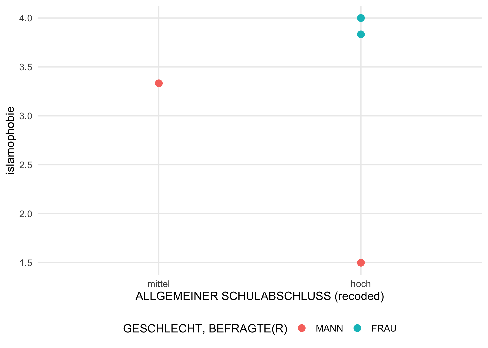
aes() legt fest, welcher Turm welche Eigenschaft der Grafik bestimmt, und geom_point() zeichnet jede Reihe als Punkt (Abbildung 6.1). Die x-Achse zeigt nur mittel und hoch, weil in den vier Reihen niemand mit niedriger Bildung ist.
Abbildung 6.1: aes() ordnet die Türme von vier der x-Achse, der y-Achse und der Farbe zu. geom_point() macht aus jeder Reihe einen Punkt; die Zahlen neben den Punkten sind die respid.
Auffällig: Die Schichten werden mit + verbunden, nicht mit der tidyverse-Pipe |>. Das hat historische Gründe — ggplot2 ist älter als die native Pipe und hat seinen eigenen Operator behalten. Du kannst dir merken: alles vor ggplot(...) mit |>, alles nach ggplot(...) mit +.
Warnung
Vorsicht: + vs. |>. Wenn du versehentlich |> zwischen ggplot(...) und einem geom_*()-Layer setzt, bekommst du eine kryptische Fehlermeldung wie:
Error in geom_bar(): could not find function "geom_bar"
oder
Error: `mapping` must be created by `aes()`
Heilmittel: ein + statt |> zwischen den ggplot2-Schichten — sonst bleibt alles wie gewohnt.
Hinweis
Hintergrund: Wer hat die Grammatik erfunden? Leland Wilkinson formulierte 2005 in The Grammar of Graphics die Idee, jede statistische Grafik aus einer kleinen Zahl orthogonaler Komponenten zusammenzubauen. Hadley Wickham implementierte das 2007 als ggplot (später ggplot2) in R. Heute ist die Grammar Standard auch in Python (plotnine), JavaScript (Observable Plot) und vielen kommerziellen Tools — wer einmal in einem System gelernt hat, in welchen Schichten eine Grafik denkt, kann sie in allen lesen.
6.2.1 Erste Grafik: Häufigkeitsverteilung eines Items
Frage: Wie verteilen sich die Antworten auf das Item mm03 („Anwesenheit von Muslimen bringt Konflikt”)?
allbus|>filter(!is.na(mm03))|>ggplot(aes(x =mm03, weight =wghtpew))+geom_bar(fill ="#2563eb")+labs(x ="mm03: Anwesenheit von Muslimen bringt Konflikt", y ="Anzahl (gewichtet)", caption ="ALLBUS 2023, gewichtet mit wghtpew")+scale_x_continuous(breaks =1:7)
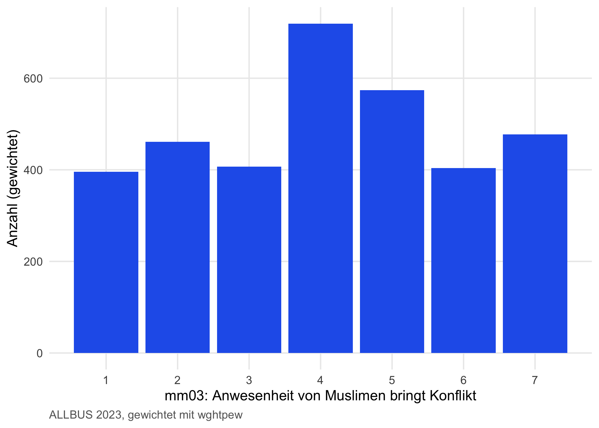
Lesart. Die Skala läuft von 1 („stimme gar nicht zu”) bis 7 („stimme voll und ganz zu”). Die Verteilung zeigt, in welche Richtung die Befragten tendieren.
Hinweis
weight = (ggplot2) vs. weights = (mariposa). Beide gewichten — gleiches Konzept, andere Schreibung. ggplot2 nutzt weight (Singular, ohne s) als Aesthetic innerhalb von aes(); mariposa-Funktionen wie frequency() oder t_test() nutzen weights (Plural, mit s) als Funktionsargument. Wer beides im selben Skript schreibt, vertippt sich gelegentlich — und ungewichtete Outputs sind keine Fehlermeldung, sondern stillschweigend falsch.
6.2.2 Zweite Grafik: Subgruppen-Vergleich
Frage: Wie unterscheidet sich Islamfeindlichkeit nach Bildungsniveau?
allbus|>filter(!is.na(islamophobie), !is.na(educ_kat))|>ggplot(aes(x =educ_kat, y =islamophobie, fill =educ_kat))+geom_boxplot(alpha =0.7)+labs(x ="Bildungsgruppe", y ="Islamfeindlichkeit (1–7)", caption ="ALLBUS 2023")+scale_fill_brewer(palette ="Blues")+theme(legend.position ="none")
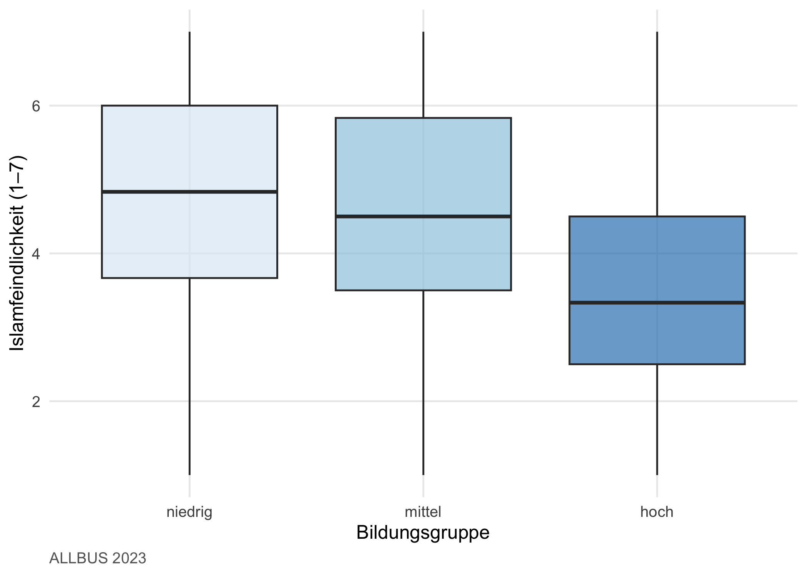
Beide Grafiken folgen dem gleichen Drei-Schritt-Aufbau. Den schauen wir uns jetzt im Detail an.
6.3 Aufbau einer Grafik
6.3.1 Plot-Objekt erstellen mit ggplot()
Das Plot-Objekt entsteht mit ggplot(). Erstes Argument ist der Datensatz:
g<-allbus|>ggplot()
Allein ist g ein „leeres” Plot-Objekt — es weiß noch nichts über Achsen oder Inhalte.
6.3.2 Aesthetic Mapping mit aes()
Mit aes() ordnest du Spalten des Datensatzes den visuellen Eigenschaften der Grafik zu. Die wichtigsten Eigenschaften:
Argument
Wozu
x =, y =
Achsen
weight =
Survey-Gewichtung
fill =
Füllfarbe (Flächen — Balken, Boxen)
colour =
Linien- oder Punktfarbe
shape =
Punktform
linetype =
Strichstil
size =, alpha =
Größe / Transparenz
group =
unsichtbare Gruppierung
Wichtig: Wenn aes()innerhalb von ggplot() steht, gilt das Mapping für alle Layer der Grafik. Du kannst Mappings auch pro Layer setzen — dann gelten sie nur dort.
Warnung
Konzept: Innerhalb oder außerhalb von aes()? Das ist die Anfänger:innen-Falle in ggplot2. Die Regel ist einfach, hat aber gegensätzliche Konsequenzen:
Innerhalb aes() → eine Datenspalte wird auf eine visuelle Eigenschaft gemappt. Die Farbe variiert dann mit den Werten der Variable, und ggplot2 vergibt automatisch eine Legende.
Außerhalb aes() → eine konstante Eigenschaft für alle Punkte/Balken. Keine Legende, alles in derselben Farbe.
ggplot(allbus, aes(x =age, fill =sex))+geom_bar()# ein Balken pro Alter, nach sex gestapeltggplot(allbus, aes(x =age))+geom_bar(fill ="steelblue")# alle Balken einheitlich blau
Im ersten Aufruf bestimmt der Turm sex die Farbe jedes Stücks eines Balkens, im zweiten gilt der eine Wert "steelblue" für alle Balken (Abbildung 6.2).
Abbildung 6.2: Oben bestimmt der Turm sex die Füllfarbe: Jeder Balken ist nach sex gestapelt, die Legende zeigt die Farben. Unten gilt der eine Wert "steelblue" für alle Balken, eine Legende gibt es nicht; gezeigt sind die Balken für 18 bis 24 Jahre.
Kurz überlegen. Was zeichnet R, wenn die Konstante in aes() steht: ggplot(allbus, aes(x = age, fill = "steelblue")) + geom_bar()? Welche Farbe haben die Balken, und gibt es eine Legende?
TippAuflösung
ggplot(allbus, aes(x =age, fill ="steelblue"))+geom_bar()
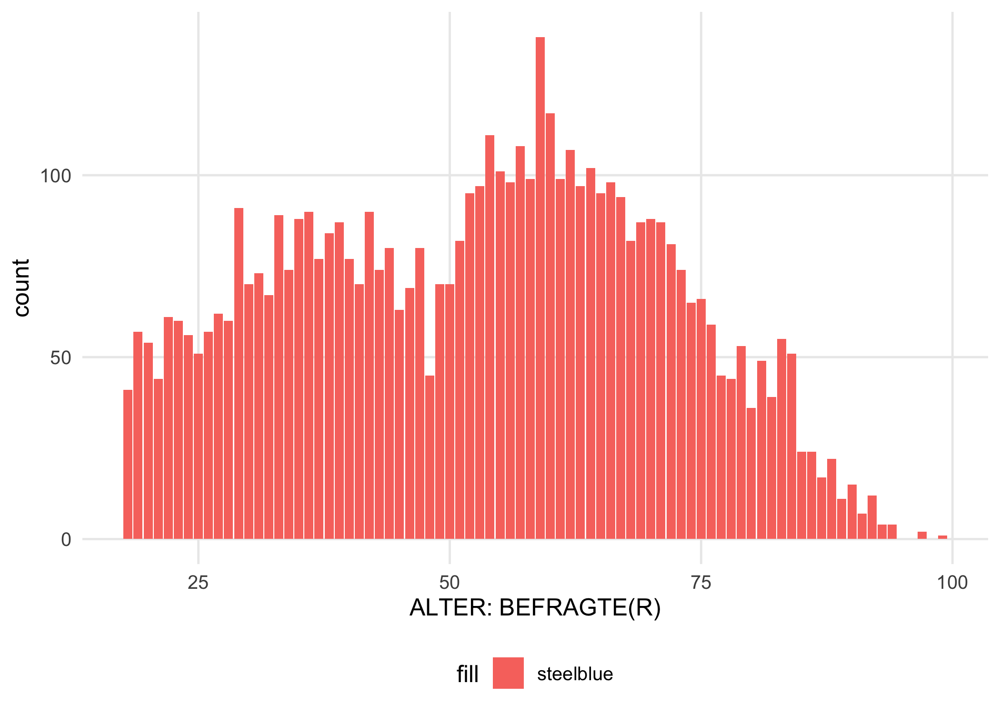
In aes() behandelt ggplot2 "steelblue" wie einen Turm, in dem in jeder Reihe derselbe Wert steht. Das ist eine einzige Stufe, und sie bekommt die erste Farbe der Standardpalette, ein Lachsrot (#F8766D). Die Legende hat genau einen Eintrag, „steelblue“. Eine solche Legende ist ein deutliches Zeichen dafür, dass eine Konstante in aes() steht.
fill vs. color — die Mini-Regel. ggplot2 unterscheidet zwei Farb-Aesthetics:
fill ist die Füllfarbe — für Flächen: Balken, Boxen, Polygone, Dichten.
color ist die Strichfarbe — für Linien, Punkte, Outlines.
Wer einen Balken einfärben will und color = sex schreibt, sieht nur dünne Outlines und eine ansonsten leere Fläche. Bei Punkten und Linien ist color richtig, bei Balken fill. Bei manchen Geoms (z. B. geom_boxplot()) brauchst du beides — fill für die Box, color für den Rahmen.
g<-allbus|>filter(!is.na(islamophobie), !is.na(eastwest))|>ggplot(aes(x =eastwest, y =islamophobie, weight =wghtpew, fill =eastwest))
g ist jetzt ein Plot-Objekt mit Achsenzuweisungen — du siehst aber noch nichts, weil kein Layer existiert.
6.3.3 Layer hinzufügen mit geom_jitter(), geom_boxplot() und geom_violin()
Layer kommen mit + dazu. Die Layer-Funktionen beginnen alle mit dem Präfix geom_.
Punktdiagramm / Jitter:
allbus|>filter(!is.na(islamophobie), !is.na(populismus))|>ggplot(aes(x =populismus, y =islamophobie))+geom_jitter(width =0.08, height =0.08, alpha =0.2, color ="#1f77b4")+labs(x ="Populismus (1–5, umgepolt)", y ="Islamfeindlichkeit (1–7)", caption ="ALLBUS 2023")
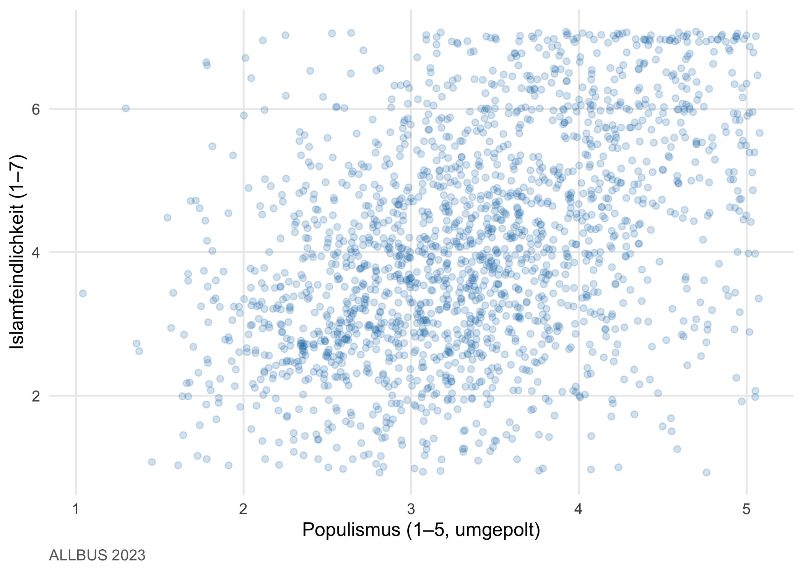
geom_jitter() verteilt überlappende Punkte leicht — das ist bei zwei diskreten Achsen (Skalen mit wenigen Ausprägungen) unverzichtbar, sonst sehen alle Befragten wie ein Punkt aus.
Boxplot und Violinplot:
g_base<-allbus|>filter(!is.na(islamophobie), !is.na(educ_kat))|>ggplot(aes(x =educ_kat, y =islamophobie, fill =educ_kat))g_base+geom_boxplot()
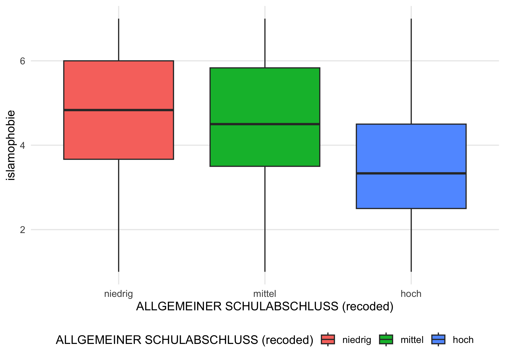
Boxplots zeigen Median (Linie in der Box), die mittleren 50 % (Box) und Whisker (1.5 × IQR). Violinplots zeigen stattdessen die Dichte:
g_base+geom_violin()
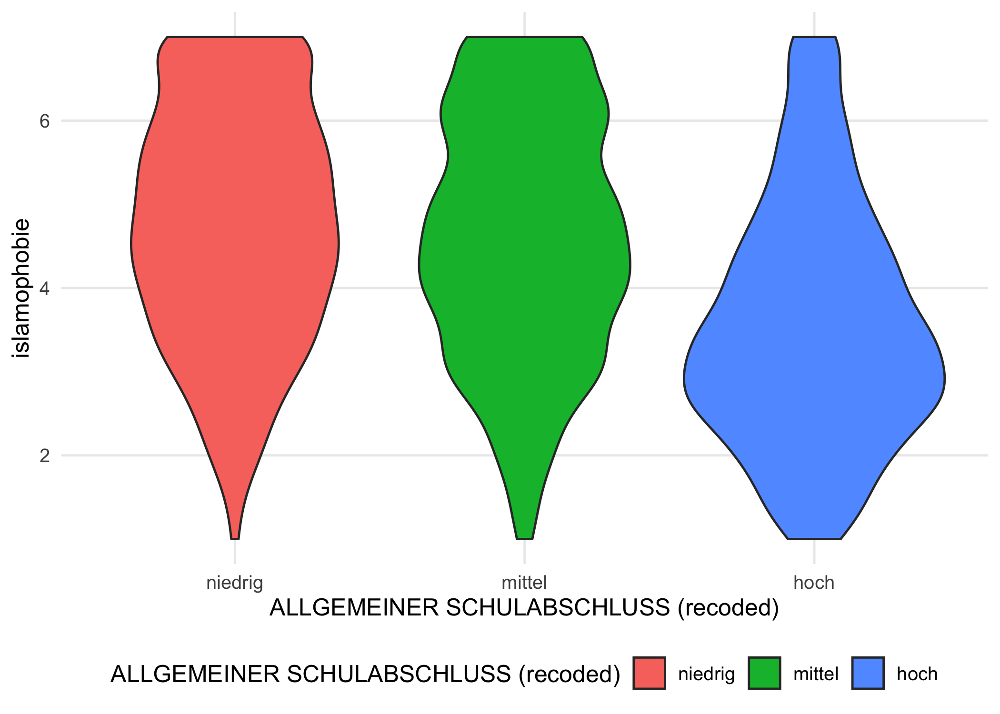
Ein häufiger Trick: beide Schichten kombinieren — Violin als Hintergrund, dünnen Boxplot darüber:
g_base+geom_violin(alpha =0.4)+geom_boxplot(width =0.1, fill ="white")+theme(legend.position ="none")
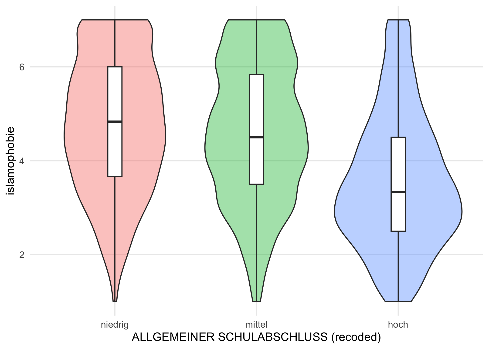
g_base enthält die Daten und das Mapping, aber noch keine Ebene. Bis dahin läuft die Bauplatte durch |>; danach legt jedes + eine Ebene darauf, und was später kommt, liegt oben (Abbildung 6.3). theme() kommt zwar auch mit + dazu, legt aber keine Ebene an: Es ändert das Aussehen und blendet hier die Legende aus.
Abbildung 6.3: Bis ggplot() läuft die Bauplatte durch |>; das Ergebnis g_base hat Achsen, aber keine Ebene. Mit + kommen Violinen und Boxen als eigene Ebenen dazu, die Boxen liegen oben.
6.4 Geoms für verschiedene Datentypen
Welches geom_* sinnvoll ist, hängt vom Datentyp der Variablen ab. Eine Schnellübersicht:
Datentyp
Empfohlene Geoms
Eine kategoriale Variable
geom_bar()
Eine kontinuierliche Variable
geom_histogram(), geom_density()
Zwei kategoriale Variablen
geom_bar(position = "dodge") oder position = "fill"
Eine kategoriale + eine kontinuierliche
geom_boxplot(), geom_violin()
Zwei kontinuierliche Variablen
geom_point(), geom_jitter(), geom_smooth()
Zeitreihe
geom_line()
6.4.1 Eine kategoriale Variable mit geom_bar() und after_stat()
Klassischer Bar Chart mit geom_bar():
allbus|>filter(!is.na(educ_kat))|>ggplot(aes(x =educ_kat, weight =wghtpew))+geom_bar(fill ="steelblue")+labs(x ="Bildungsgruppe", y ="Anzahl (gewichtet)")
Relative Häufigkeiten. In modernem ggplot2 (ab Version 3.4) benutzt du after_stat() statt der alten ..count../..prop..-Syntax:
allbus|>filter(!is.na(educ_kat))|>ggplot(aes(x =educ_kat, weight =wghtpew))+geom_bar(aes(y =after_stat(prop), group =1), fill ="steelblue")+scale_y_continuous(labels =scales::percent)+labs(x ="Bildungsgruppe", y ="Anteil")
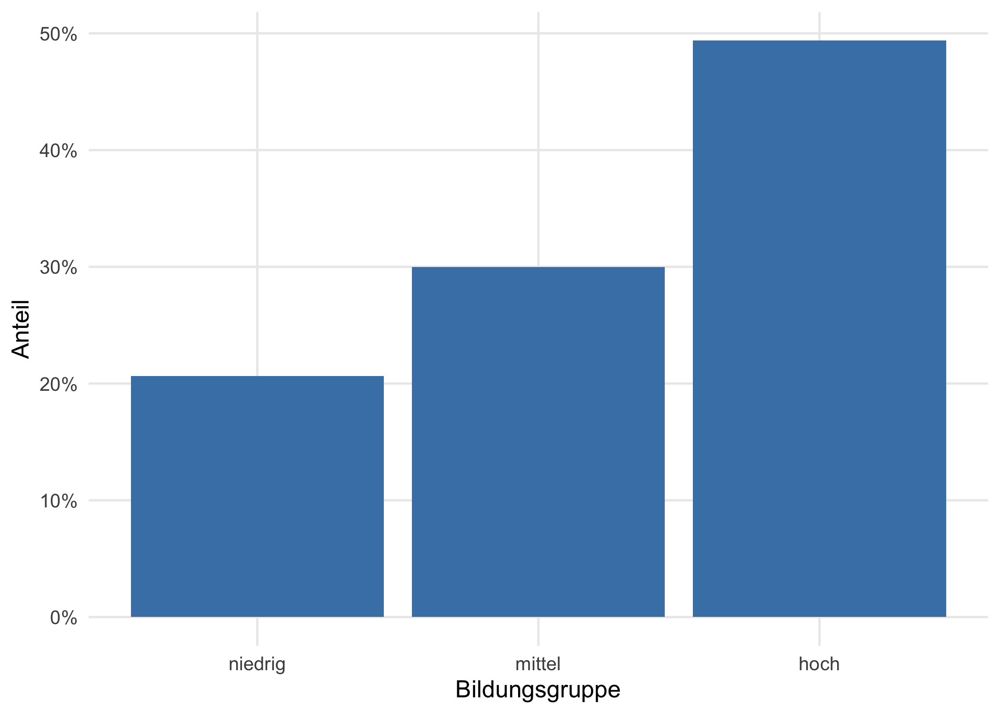
Bevor geom_bar() zeichnet, zählt es: Für jede Stufe von educ_kat addiert es die Gewichte aus wghtpew zu count (1049.6, 1524.7 und 2510.5) und rechnet daraus den Anteil prop (0.206, 0.300 und 0.494). Ohne weitere Angabe kommt count auf die y-Achse wie im Chunk davor, after_stat(prop) holt stattdessen die Anteile (Abbildung 6.4). group = 1 fasst dabei alle Stufen zu einer Gruppe zusammen; ohne diese Angabe rechnet ggplot2 den Anteil jeder Stufe an sich selbst, und jeder Balken wäre 100 % hoch.
Abbildung 6.4: geom_bar() addiert je Stufe von educ_kat die Gewichte zu count und rechnet daraus den Anteil prop; after_stat(prop) setzt die Anteile auf die y-Achse. Links stehen die ersten zwei Befragten je Stufe.
Mit fill = als zweiter Gruppierungsvariable bekommst du gestapelte Balken — und mit position = "dodge" nebeneinander:
allbus|>filter(!is.na(educ_kat), !is.na(sex))|>ggplot(aes(x =educ_kat, weight =wghtpew, fill =sex))+geom_bar(position ="dodge")+labs(x ="Bildungsgruppe", y ="Anzahl (gewichtet)", fill ="Geschlecht")
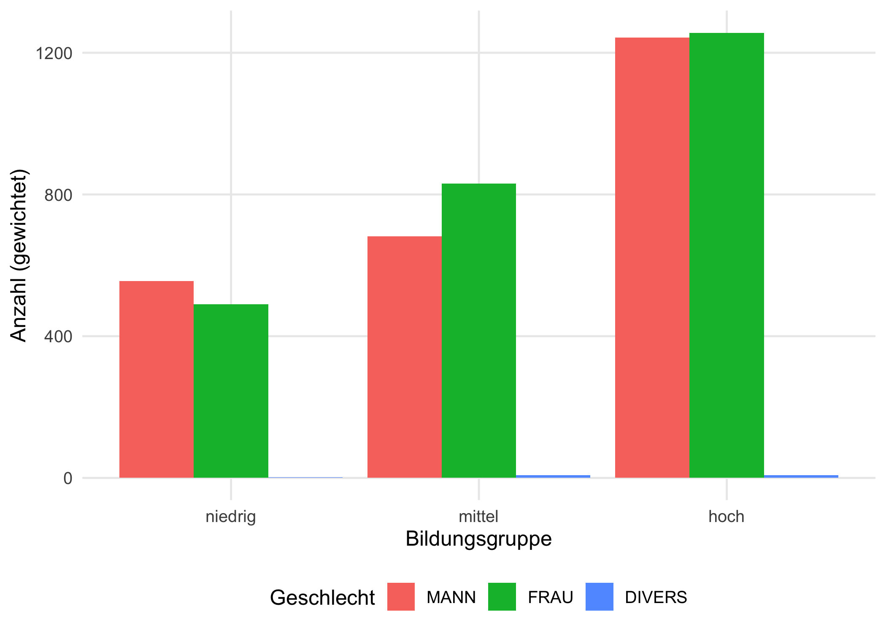
6.4.2 Eine kontinuierliche Variable mit geom_histogram() und geom_density()
Histogramm mit geom_histogram(). Die wichtigste Stellschraube ist binwidth:
allbus|>filter(!is.na(islamophobie))|>ggplot(aes(x =islamophobie, weight =wghtpew))+geom_histogram(binwidth =0.5, fill ="steelblue", color ="white")+labs(x ="Islamfeindlichkeit (1–7)", y ="Anzahl (gewichtet)")
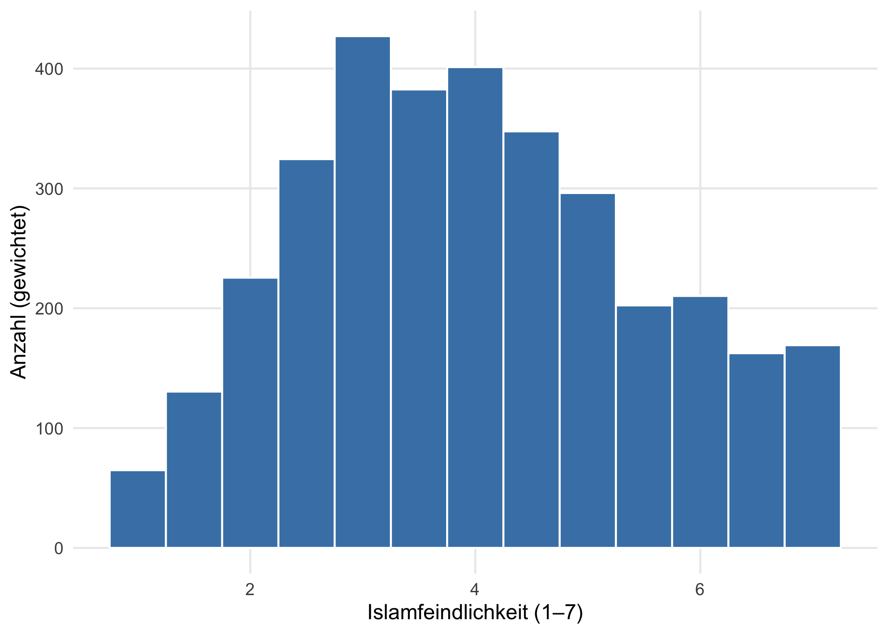
Mit geom_density() bekommst du stattdessen eine geglättete Dichteschätzung:
allbus|>filter(!is.na(islamophobie), !is.na(sex))|>ggplot(aes(x =islamophobie, fill =sex))+geom_density(alpha =0.4)+labs(x ="Islamfeindlichkeit (1–7)", y ="Dichte", fill ="Geschlecht")
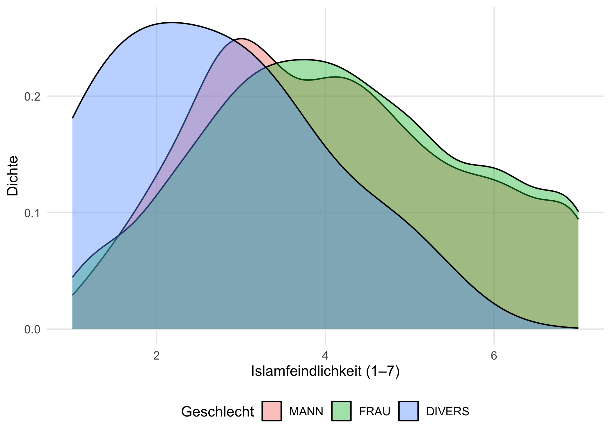
6.4.3 Zwei kontinuierliche Variablen mit geom_smooth()
Streudiagramm mit Regressionsgerade — der Klassiker:
allbus|>filter(!is.na(islamophobie), !is.na(populismus), !is.na(sex))|>ggplot(aes(x =populismus, y =islamophobie, color =sex))+geom_jitter(alpha =0.2, width =0.05, height =0.05)+geom_smooth(method ="lm", se =TRUE)+labs(x ="Populismus", y ="Islamfeindlichkeit", color ="Geschlecht", caption ="ALLBUS 2023")
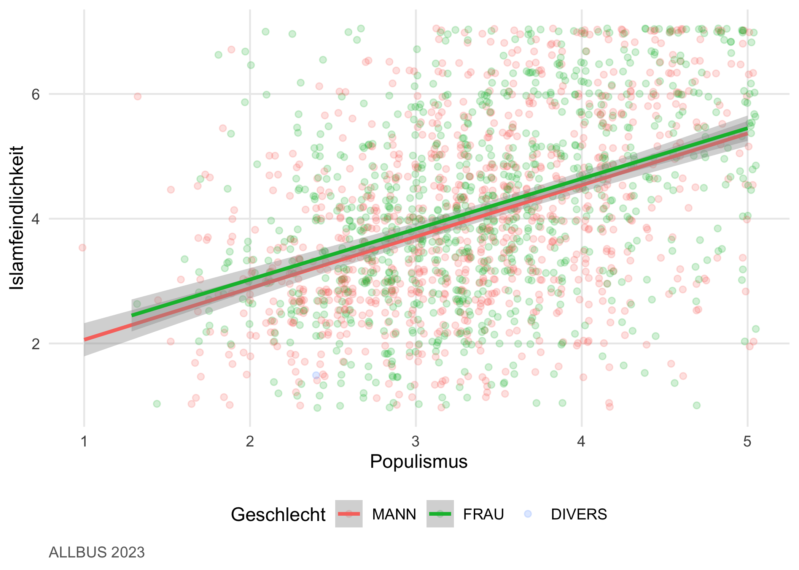
geom_smooth(method = "lm") zeichnet eine lineare Regressionsgerade pro Gruppe. Für nichtlineare Trends nutzt du method = "loess". Was eine Regressionsgerade mathematisch ist, lernst du in Kapitel 9.4 — hier dient sie nur als visuelle Trend-Hilfe.
6.5 Subgruppen aufteilen mit Facets: facet_wrap() und facet_grid()
Stell dir vor, du willst den Zusammenhang von Populismus und Islamfeindlichkeit zeigen — aber getrennt nach Bildungsgruppen. Du könntest die drei Gruppen in einer einzigen Grafik mit drei verschiedenen Farben übereinanderlegen. Bei zwei Gruppen funktioniert das noch; bei drei oder mehr wird es chaotisch — Punkte überlappen, Trendlinien kreuzen sich, das Auge findet sich nicht mehr zurecht.
Die Lösung sind Facets: ggplot2 macht aus einer Grafik mehrere, eine pro Subgruppe, nebeneinander angeordnet, mit identischen Achsen. So lassen sich die Subgruppen direkt vergleichen, ohne dass sie sich gegenseitig überlagern. Das ist eine der mächtigsten Funktionen in ggplot2 — und in der Sozialforschung extrem hilfreich, weil dort fast jede Frage gruppenspezifisch interessant ist.
Es gibt zwei Varianten: facet_wrap() für eine Gruppierungsvariable, facet_grid() für zwei. Beide funktionieren gleich aufgebaut: Du gibst die Gruppierungsvariable als Formel mit ~ an.
allbus|>filter(!is.na(islamophobie), !is.na(populismus), !is.na(educ_kat))|>ggplot(aes(x =populismus, y =islamophobie))+geom_jitter(alpha =0.2, color ="#1f77b4")+geom_smooth(method ="lm", color ="black")+facet_wrap(~educ_kat)+labs(x ="Populismus", y ="Islamfeindlichkeit")
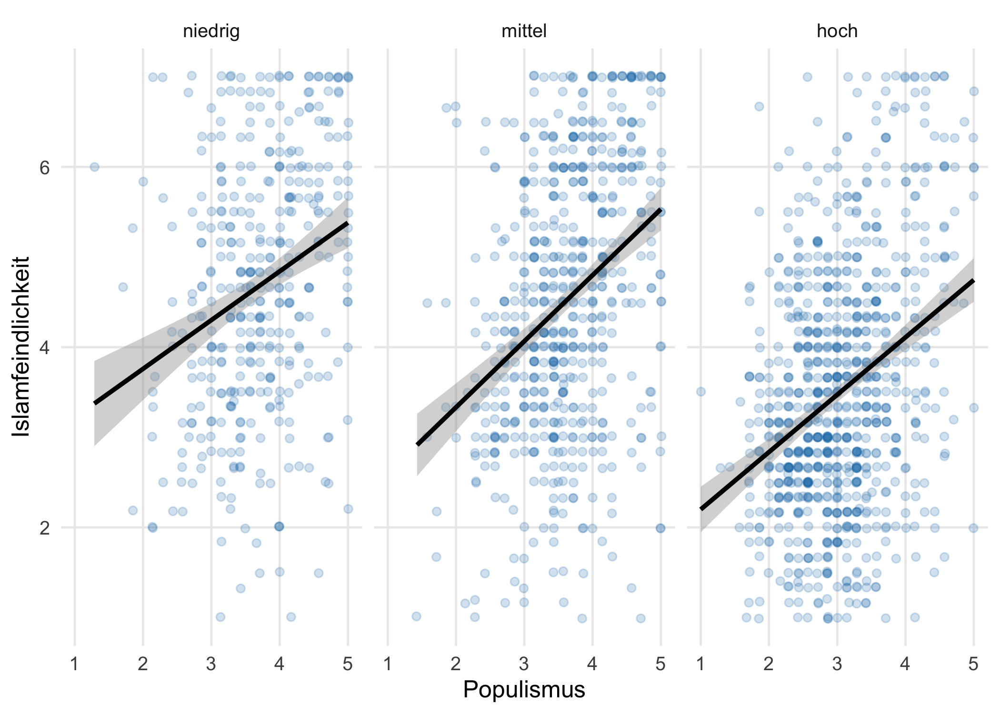
Bei zwei Gruppierungsvariablen ist facet_grid() die richtige Wahl — Zeilen × Spalten:
allbus|>filter(!is.na(islamophobie), !is.na(populismus),!is.na(educ_kat), !is.na(eastwest))|>ggplot(aes(x =populismus, y =islamophobie))+geom_jitter(alpha =0.2, color ="#1f77b4")+geom_smooth(method ="lm", color ="black")+facet_grid(eastwest~educ_kat)+labs(x ="Populismus", y ="Islamfeindlichkeit")
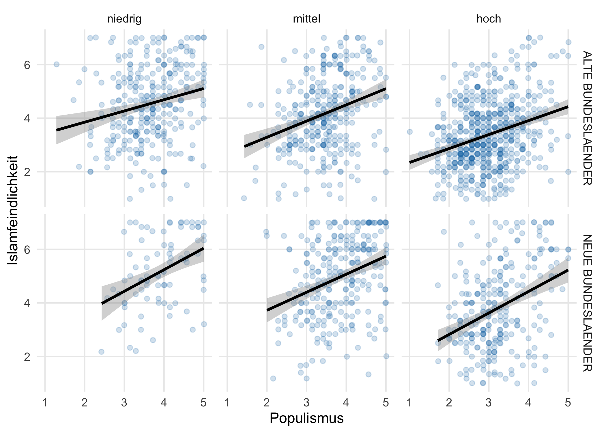
Hinweis
Reviewer-Hinweis. Facets sind in Publikationen aussagekräftiger als Tabellen mit Subgruppen-Statistiken. Wenn du in der Diskussion zeigen willst, dass ein Zusammenhang in einer Subgruppe stärker ist als in einer anderen, ist facet_wrap oder facet_grid das Werkzeug der Wahl — auf einen Blick sichtbar.
6.6 Farben und Themes
6.6.1 Farbpaletten mit scale_color_*() und scale_fill_*()
Der Default-Farbverlauf von ggplot2 ist nicht barrierefrei. Eine kleine Sammlung Standard-Lösungen:
# Diskrete kategoriale Variablen — Brewer-Palettenscale_color_brewer(palette ="Set1")# für Linien/Punktescale_fill_brewer(palette ="Blues")# für Flächen# Kontinuierlich — Viridis (barrierearm)scale_color_viridis_c()scale_fill_viridis_c()# Eigene Palettefarben<-c("#2563eb", "#16a34a", "#dc2626")scale_color_manual(values =farben)
Hinweis
Hintergrund: Barrierefreiheit. Etwa 8 % der Männer (und 0.5 % der Frauen) haben eine Form der Rot-Grün-Sehschwäche. Default-Farbpaletten verwenden oft Rot und Grün als Hauptkontrast — für betroffene Leser:innen verschwindet damit die Information. Viridis (Standardpalette in matplotlib, jetzt auch in ggplot2) bleibt für alle Sehschwächen unterscheidbar und ist auch in Schwarzweiß-Druck lesbar. Faustregel: bei kontinuierlichen Skalen immer Viridis, bei kategorialen Variablen aus ColorBrewer-Paletten wählen (Set1, Set2, Blues, RdYlBu).
6.6.2 Themes mit theme_*() und theme()
Komplette Themes ersetzen mit einer Zeile das Standard-Aussehen:
p<-allbus|>filter(!is.na(islamophobie), !is.na(educ_kat))|>ggplot(aes(x =educ_kat, y =islamophobie, fill =educ_kat))+geom_boxplot()+labs(x ="Bildung", y ="Islamfeindlichkeit")+theme(legend.position ="none")p+theme_minimal()
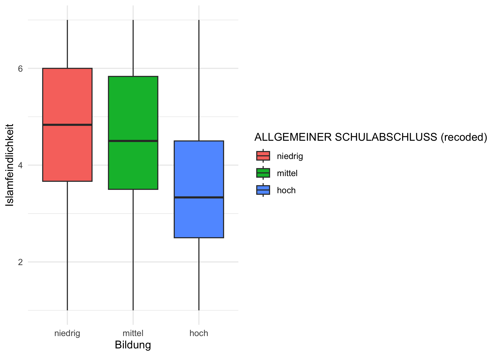
theme_bw(), theme_classic(), theme_dark(), theme_void() sind weitere Optionen.
Hinweis
Konzept: theme_*() vs. theme(). Die zwei Funktions-Familien klingen gleich, machen aber Verschiedenes:
theme(legend.position = "none", …) — einzelne Elemente gezielt anpassen. Diese Funktion akzeptiert dutzende Elemente (axis.text, plot.title, panel.grid …).
In der Praxis kombinierst du beide: zuerst ein komplettes Theme als Basis, dann einzelne Anpassungen via theme().
Wichtig
mariposa-Tipp / theme_rworkshop(). Alle Grafiken in diesem Buch nutzen automatisch das Theme theme_rworkshop(), das in R/_common.R definiert und per theme_set() global gesetzt ist. So sehen alle Plots im Quarto-Projekt einheitlich aus, ohne dass du das Theme in jedem Chunk explizit angeben musst. Für dein eigenes Projekt definierst du dir ein passendes Theme einmal und referenzierst es per source("R/_common.R") aus jedem Kapitel-Setup-Chunk.
Tipp
SPSS → R: Klick vs. Code. In SPSS klickst du Farben in einem Dialogfeld an, und die nächste Grafik fängt wieder bei Null an. In ggplot2 speicherst du Theme und Farbpalette als Code — und kannst sie auf jede neue Grafik anwenden, ohne dich zu wiederholen.
6.7 Beschriftungen mit labs() und to_label()
labs() setzt alle Texte einer Grafik in einem Funktionsaufruf:
allbus|>filter(!is.na(islamophobie), !is.na(populismus))|>ggplot(aes(x =populismus, y =islamophobie))+geom_jitter(alpha =0.2, color ="#1f77b4", width =0.05, height =0.05)+geom_smooth(method ="lm", color ="black")+labs( title ="Islamfeindlichkeit und Populismus in Deutschland 2023", subtitle ="Bivariater Zusammenhang, ungewichtet", x ="Populismus (1–5, umgepolt)", y ="Islamfeindlichkeit (1–7)", caption ="Quelle: ALLBUS 2023, GESIS Leibniz-Institut")
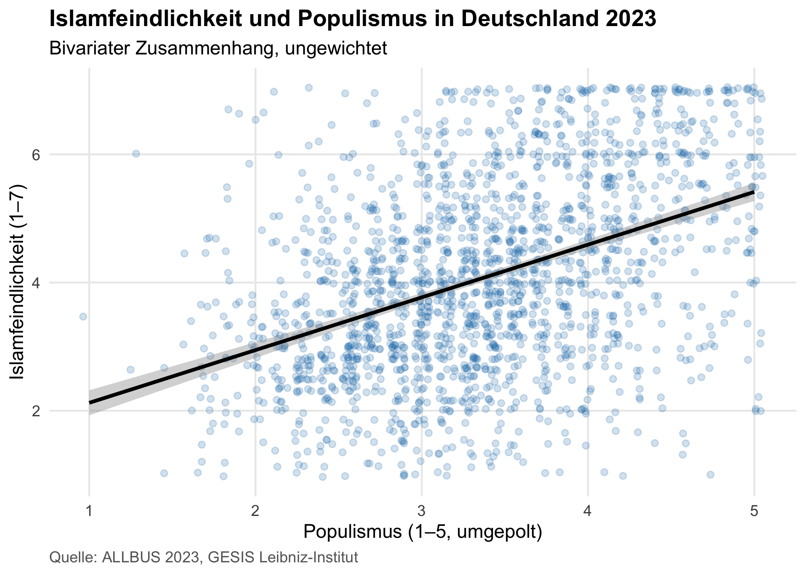
Lesbare Achsen über to_label(). Bei <haven_labelled>-Variablen aus SPSS willst du im Plot meist die Wertelabels sehen, nicht die numerischen Codes. Im Setup-Chunk dieses Kapitels haben wir genau das gemacht — to_label(eastwest, sex) hat die beiden Variablen in Faktoren verwandelt:
allbus|>filter(!is.na(islamophobie))|>ggplot(aes(x =eastwest, y =islamophobie, fill =eastwest))+geom_boxplot()
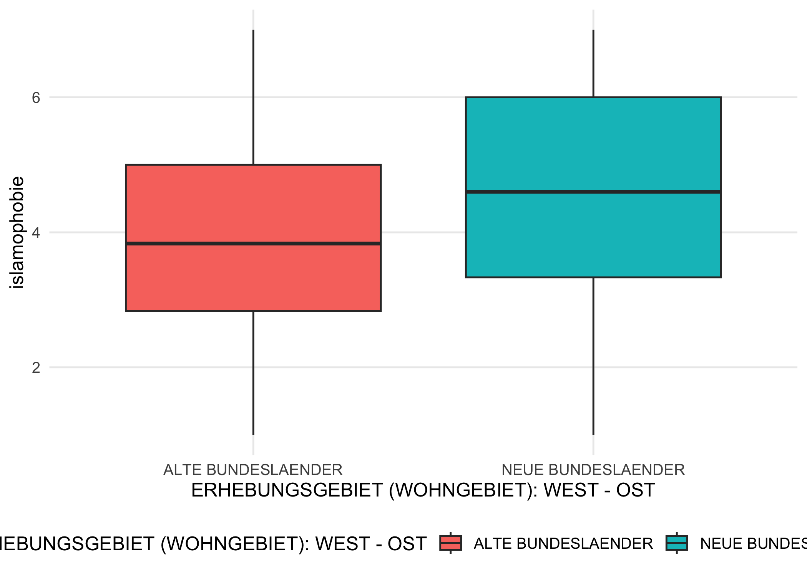
# Achse zeigt jetzt 'ALTE BUNDESLAENDER' / 'NEUE BUNDESLAENDER'# statt 1 / 2 — weil eastwest schon im Setup-Chunk to_label-konvertiert wurde.
Wenn du eine zusätzliche labelled-Variable im Plot brauchst, wendest du to_label() einfach in der Pipeline an, bevor du ggplot() aufrufst.
6.8 Grafiken speichern mit ggsave() und kombinieren — Ausblick
Zwei weitere Bausteine, die du in den nächsten Kapiteln brauchst:
Speichern mit ggsave(). Eine Grafik in deine Hausarbeit oder Folien bringen geht über ggsave("plot.png", width = 8, height = 5, dpi = 300). Vollständige Behandlung in Kapitel 9.9.3.
Mehrere Plots kombinieren mit patchwork. Wenn du zwei Grafiken nebeneinander oder untereinander brauchst, kombinierst du sie mit p1 + p2 (nebeneinander) oder p1 / p2 (untereinander). Vollständige Behandlung in Kapitel 9.9.2.
Übungen
HinweisÜbung 1 · Eigene Verteilung · Reproduktion
Erstelle ein Histogramm der Populismus-Skala (populismus) mit Binwidth 0.25, gewichtet, mit eigenem Titel und Achsenbeschriftung.
TippLösung
allbus|>filter(!is.na(populismus))|>ggplot(aes(x =populismus, weight =wghtpew))+geom_histogram(binwidth =0.25, fill ="#7c3aed", color ="white")+labs(x ="Populismus (umgepolt)", y ="Anzahl (gewichtet)", title ="Verteilung der Populismus-Einstellung", caption ="ALLBUS 2023")
HinweisÜbung 2 · Subgruppen-Boxplot mit Facets · Reproduktion
Erstelle einen Boxplot der Islamfeindlichkeit nach eastwest, gefiltert nach Bildungsgruppen educ_kat (per facet_wrap).
TippLösung
allbus|>filter(!is.na(islamophobie), !is.na(eastwest), !is.na(educ_kat))|>ggplot(aes(x =eastwest, y =islamophobie, fill =eastwest))+geom_boxplot()+facet_wrap(~educ_kat)+labs(x =NULL, y ="Islamfeindlichkeit")+theme(legend.position ="none")
HinweisÜbung 3 · Dichteplot mit zwei Gruppierungen · Transfer
Erstelle einen Dichteplot (geom_density) der Islamfeindlichkeit, eingefärbt nach eastwest, und teile das Ganze mit facet_wrap nach educ_kat auf. Wo liegen die größten Unterschiede zwischen Ost und West?
TippLösung
allbus|>filter(!is.na(islamophobie), !is.na(eastwest), !is.na(educ_kat))|>ggplot(aes(x =islamophobie, fill =eastwest))+geom_density(alpha =0.4)+facet_wrap(~educ_kat)+labs(x ="Islamfeindlichkeit", y ="Dichte", fill =NULL, title ="Verteilungen nach Bildung und Region")
HinweisÜbung 4 · Eigene Visualisierung · Mini-Forschungsfrage
Wähle aus dem ALLBUS 2023 eine politik-/sozialwissenschaftlich interessante Frage und visualisiere sie. Beispiele: Wie verteilt sich Demokratiezufriedenheit (ps03)? Hängt Lebenszufriedenheit (ls01) mit Alter zusammen? Achte auf: passender Geom-Typ, gewichten falls deutschlandweit (weight = wghtpew), lesbare Achsen, aussagekräftige Caption.
Keine Musterlösung — bewerte deine Grafik daran, ob sie eine konkrete Frage in ≤ 10 Sekunden beantwortet.
Hinweis
Forschungsjournal: Stand deiner Mini-Studie. Du beherrschst jetzt das Visualisierungs-Vokabular — Histogramm, Boxplot, Streudiagramm, Facets, Themes. Ab dem nächsten Kapitel ist jede statistische Analyse von einer entsprechenden Grafik begleitet. Was als Nächstes kommt: In Kapitel 7 beschreibst du die Skala (uni- und bivariat), illustrierst mit Histogramm und Boxplot, und testest die ersten Hypothesen — gewichtet, mit Effektgröße.
Was du jetzt weißt
Du baust ggplot2-Grafiken in drei Schritten: Daten, Aesthetic Mapping, Layer.
Du wählst passende geom_*-Schichten nach Datentyp (kategorial/kontinuierlich, eine/zwei Variablen).
Du teilst Subgruppen mit facet_wrap() und facet_grid() auf.
Du benutzt Brewer- und Viridis-Paletten für barrierearme Farbgebung.
Du kennst theme_rworkshop() als buchweites Default-Theme und kannst es in eigene Projekte übernehmen.
Du setzt Variablenlabels auf Achsen über to_label() für lesbare Beschriftungen.
In den folgenden Methoden-Kapiteln nutzt du diese Grundlagen sofort: in Kapitel 7 zur Verteilungs- und Gruppen-Visualisierung, in Kapitel 9 für Coefficient-Plots und Multi-Plot-Kompositionen.
Weiterführend
Hadley Wickham et al., ggplot2 Reference — Funktionsreferenz mit Beispielen für jede geom_* und scale_*.
R Graph Gallery — Inspiration und Cookbook für tausende Grafiktypen.
![Zwei Teile untereinander. Oben unter INNERHALB aes() der Code ggplot(allbus, aes(x = age, fill = sex)) + geom_bar(). Links der Turm sex (fct) mit MANN, MANN, FRAU und Auslassungspunkten, ein grüner Pfeil mit der Zuordnung fill führt zu sieben Balken für die Alter 18 bis 24. Jeder Balken ist gestapelt: unten ein grünes Stück für FRAU, darüber ein lachsrotes für MANN, bei 19, 21, 22 und 24 ganz unten ein schmaler blauer Streifen für DIVERS. Rechts die Legende fill mit MANN in Lachsrot, FRAU in Grün, DIVERS in Blau und NA in Grau. Unten unter AUSSERHALB aes() der Code ggplot(allbus, aes(x = age)) + geom_bar(fill = „steelblue“). Ein lila Stein „steelblue“ führt mit dem Pfeil fill zu denselben sieben Balken, so hoch wie oben und alle in Stahlblau, daneben steht keine Legende.](Bilder/figuren/k06-aes-konstante.svg)
![Oben der Code ggplot(aes(x = educ_kat, weight = wghtpew)) + geom_bar(aes(y = after_stat(prop), group = 1), fill = „steelblue“). Links eine Bauplatte mit den Türmen educ_kat (fct) und wghtpew (dbl+lbl), nach Stufen geordnet: zweimal niedrig mit 1.20 und 1.20, zweimal mittel mit 1.25 und 0.545, zweimal hoch mit 1.20 und 1.20, nach jeder Stufe Auslassungspunkte. Unter den Türmen die Zuordnungen x und weight. Ein grüner Pfeil geom_bar() führt zu einer Bauplatte mit den Türmen educ_kat, count und prop: niedrig, 1049.6, 0.206; mittel, 1524.7, 0.300; hoch, 2510.5, 0.494. Der Turm prop ist grün umrandet. Ein Pfeil führt zu einem Balkendiagramm mit der Zuordnung y = after_stat(prop) an der y-Achse von 0% bis 50% und x an der x-Achse: drei stahlblaue Balken für niedrig, mittel und hoch, etwa 21, 30 und 49 Prozent hoch.](Bilder/figuren/k06-bar-zaehlt.svg)
![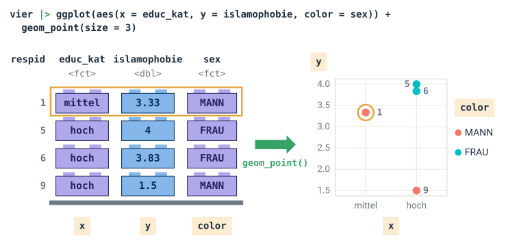 ggplot(aes(x = educ_kat, y = islamophobie, color = sex)) + geom_point(size = 3). Links eine Bauplatte mit vier Reihen und den Türmen respid, educ_kat (fct), islamophobie (dbl) und sex (fct): 1, mittel, 3.33, MANN; 5, hoch, 4, FRAU; 6, hoch, 3.83, FRAU; 9, hoch, 1.5, MANN. Die erste Reihe ist orange umrandet. Unter den Türmen stehen die Zuordnungen x, y und color. Ein grüner Pfeil geom_point() führt zu einer kleinen Grafik mit der x-Achse mittel und hoch, beschriftet x, und der y-Achse von 1.5 bis 4.0, beschriftet y. Darin vier Punkte mit ihrer respid: 1 bei mittel und 3.33 in Lachsrot, orange umkreist; 5 und 6 bei hoch und 4 und 3.83 in Türkis; 9 bei hoch und 1.5 in Lachsrot. Rechts die Legende color mit MANN in Lachsrot und FRAU in Türkis.">](Bilder/figuren/k06-grammatik.svg){kind=link}
![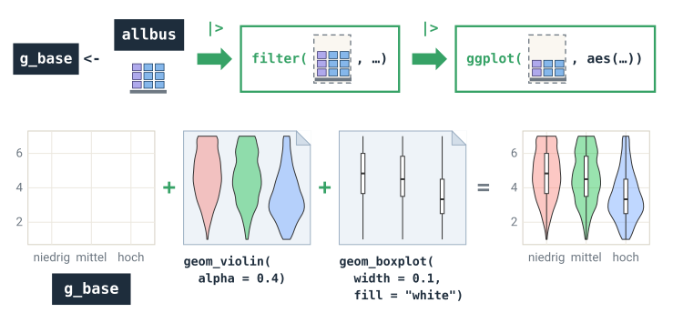 zum grünen Kasten filter(, in dessen gestricheltem ersten Feld eine kleine Bauplatte liegt, dahinter , …), ein weiterer Pfeil mit |> zum Kasten ggplot( mit einer kleineren Bauplatte im ersten Feld, dahinter , aes(…)). Darunter eine Reihe: eine leere Grafik mit den Achsen niedrig, mittel, hoch und 2, 4, 6, beschriftet g_base, plus eine Folie mit drei Violinen in Lachsrot, Grün und Blau, beschriftet geom_violin(alpha = 0.4), plus eine Folie mit drei schmalen weißen Boxen, beschriftet geom_boxplot(width = 0.1, fill = „white“), gleich die fertige Grafik, in der die Boxen über den Violinen liegen.">](Bilder/figuren/k06-ebenen.svg){kind=link}